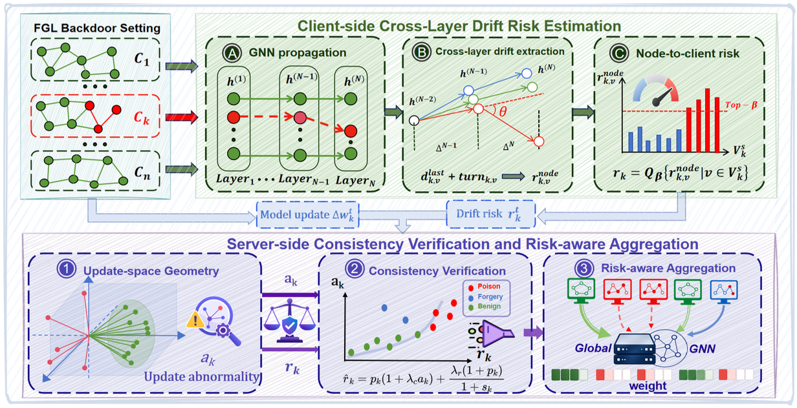
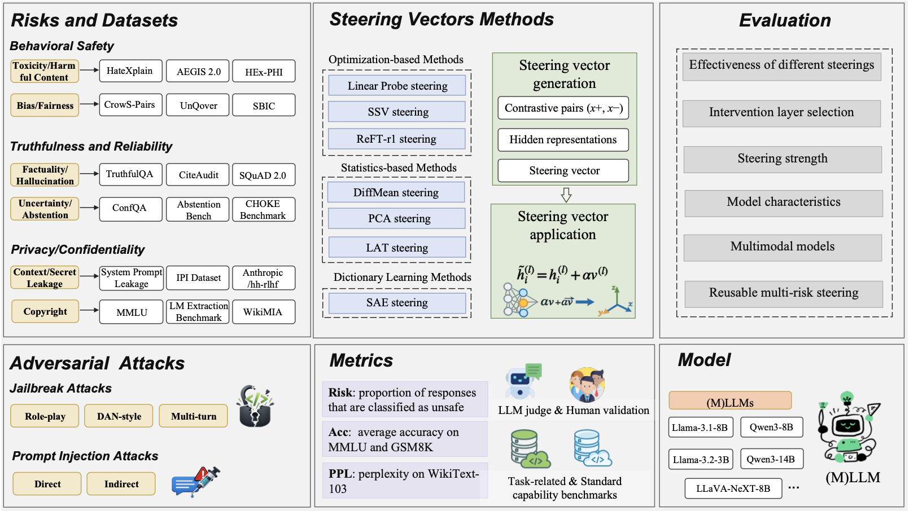

👋 Hi, my name is Yinuo Zhang (Chinese: 章一诺), an
undergraduate student majoring in Cybersecurity at
the School of Cyber Science and Engineering,
Wuhan University. I am a member of the
NIS&P Lab,
advised by
Prof. Qian Wang.
📈 My academic performance stands at
GPA 3.83/4.0,
with a
major rank of 5/168. I am interested in
graduate research opportunities in computer science, artificial
intelligence, and AI security.
01 🧭 Research
My research interests focus on AI security and trustworthy machine
learning, especially:
🛡️ Large Language Model Security and Risk Evaluation
🔗 Federated Learning Security and Backdoor Defense
✅ Trustworthy AI, Robustness, and Security-Critical Evaluation
02 📌 News
2026.06:
💡 Received the Lei Jun Computer Innovation and Development Scholarship.
2026.05:
📝 Submitted a manuscript on backdoor defense for federated graph
learning to NeurIPS 2026 as a co-first author.
2026.05:
🚀 Advanced to the national final of the
Chinese Collegiate Computing Competition.
2026.04:
📝 Submitted a manuscript on LLM steering risk evaluation to
IEEE TIFS as a co-first author.
2025.09:
🏆 Won the
National First Prize
in the China Undergraduate Mathematical Contest in Modeling.
2025.08:
🛡️ Won the
National First Prize
in the China Undergraduate AI Security Competition.
2025.05:
🎓 Received the
Huawei Scholarship.
03 📄 Manuscripts / Preprints

[1] Consistency-Verified Backdoor Defense for Federated Graph
Learning via Cross-Layer Drift
Co-first AuthorUnder Review at NeurIPS 2026
Research Direction: Federated graph learning,
backdoor defense, cross-layer representation drift, and
risk-aware aggregation.

[2] STEERRISK: Systematic Evaluation of LLM Steering Under
Security-Critical Risks
Co-first AuthorUnder Review at IEEE TIFS
Research Direction: LLM steering, AI safety
risk evaluation, jailbreak, prompt injection, privacy,
reliability, and security-critical model assessment.
04 🏅 Honors and Awards
Scholarships and Honors
🌟
Outstanding Student, Wuhan University
🔬 Advanced Individual in Science and Innovation, School of Cyber Science and Engineering
🎓
Huawei Scholarship, Wuhan University
💡 Lei Jun Computer Innovation and Development Scholarship
🎓
Wuhan University Second-Class Scholarship
✨ Base Extraordinary Scholarship
Competition Awards
🏆
National First Prize, China Undergraduate Mathematical Contest in Modeling, 2025
🛡️
National First Prize, China Undergraduate AI Security Competition, 2025
🥇
Provincial First Prize, Huazhong Cup Mathematical Modeling Contest, 2025
💻
Two Provincial Second Prizes, Chinese Collegiate Computing Competition, 2025
💻 Provincial Third Prize, China Collegiate Computing Contest, 2025
📐 Provincial Third Prize, Chinese Mathematics Competition, 2024
05 📚 Educations
Wuhan University, School of Cyber Science and
Engineering, B.Eng. Candidate in Cybersecurity, 2023.09 - Present
GPA:
3.83 / 4.00
Major Rank:
5 / 168
Language certificates:
CET-4 602,
CET-6 587.
06 🧩 Skills
Programming and experiments: Python, C, experiment
scripting, model debugging, data processing, and statistical analysis.
Research workflow: literature review, experiment
organization, result visualization, manuscript writing, and presentation.
Languages: fluent academic reading and writing in
English.